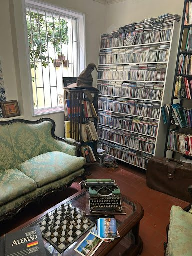
Café especial · Sebo · Cuiabá
Café, livros
e tempo sem pressa.
Uma casa antiga, xícaras bem cuidadas, estantes cheias de histórias e aquele tipo raro de ambiente que faz vc esquecer por alguns minutos que existe notificação.
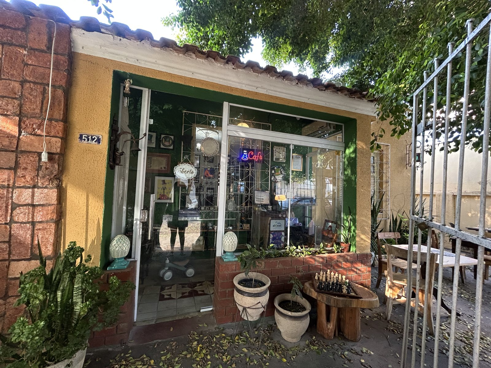
desde a primeira página
um café com história
Cafés especiais
Chás
Sebo
Doces & gostosuras
Casa antiga
Cafés especiais
Chás
Sebo
Doces & gostosuras
Casa antiga
O clima da casa
Um lugar feito para desacelerar.
O Chapeleiro mistura cafeteria e sebo numa casa de personalidade antiga, com ambientes internos e externos, cantinhos cheios de livros e uma atmosfera acolhedora e cheia de personalidade.
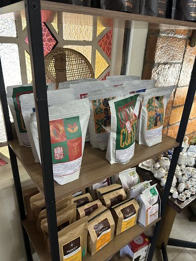
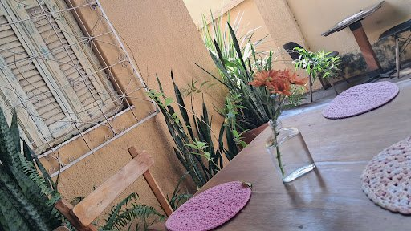
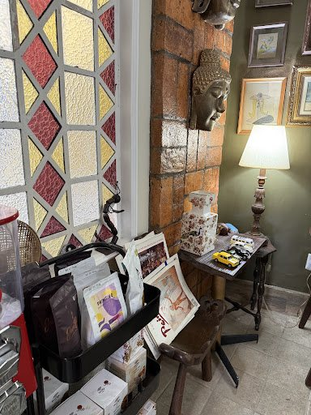
feito
sem pressa
sem pressa
um pequeno ritual
Escolha a mesa.
Escolha a mesa.
Abra um livro.
Peça o café.
Às vezes a melhor ideia é só comer algo bom, conversar, folhear um livro e deixar o tempo passar um pouco mais devagar.
ver os sabores Entre xícaras & páginas
Sabores que combinam
com uma boa pausa.

01
Cafés especiais
Do clássico bem tirado às receitas mais cremosas.
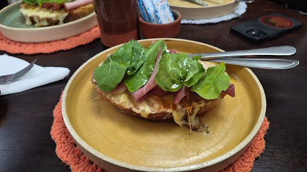
02
Tostas & lanches
Para acompanhar a xícara com algo quente, bem montado e cheio de sabor.
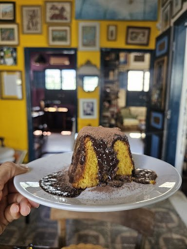
03
Bolos & doces
Doces, chocolate e receitas que pedem mais alguns minutos à mesa.
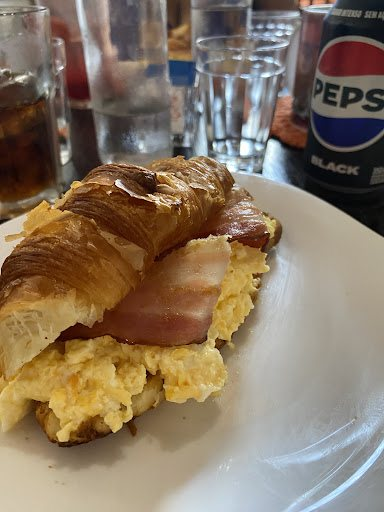
04
Café da manhã
Opções para começar o dia com calma, café fresco e algo especial no prato.
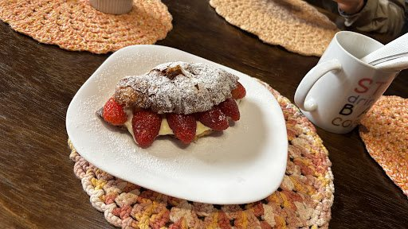
05
Gostosuras da casa
Pratos delicados e doces para completar a experiência da casa.
“
“Aconchegante, música boa, livros bons e bolo de chocolate com chocolate de verdade.”
Um pouco da casa
Texturas, detalhes
e boas mesas.
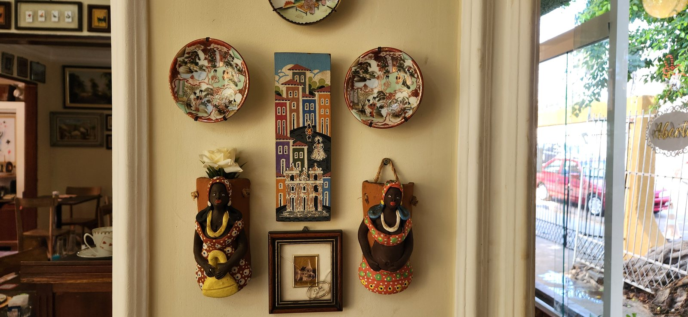

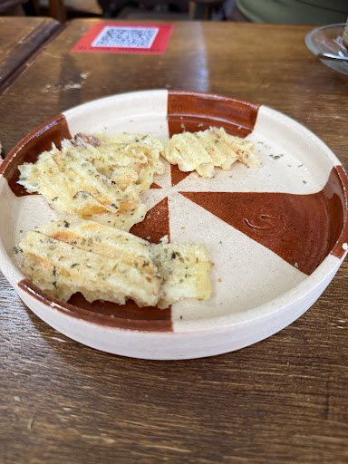
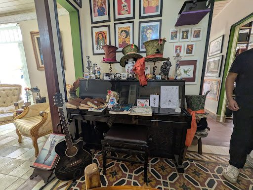
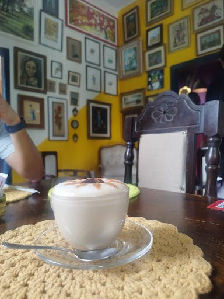
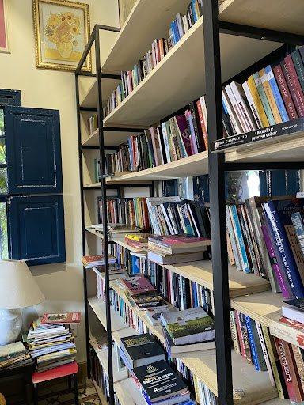
Faça uma visita
Seu próximo café
tem endereço.
Rua Marechal Floriano Peixoto, 512
Quilombo · Cuiabá, MT · 78045-390
Ter — Sex08:00 — 18:00
Sábado08:00 — 16:00
Domingo08:00 — 12:00
SegundaFechado
Quilombo
Cuiabá · MT
Cuiabá · MT